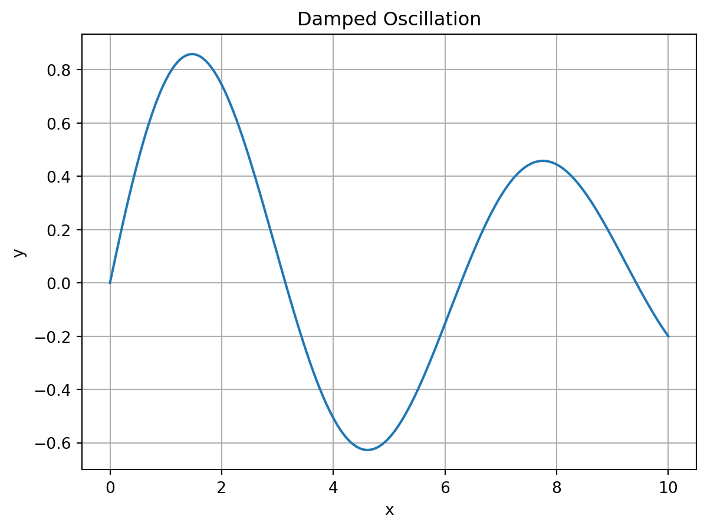

import numpy as np
import matplotlib.pyplot as plt
x = np.linspace(0,10,200)
y = np.sin(x)*np.exp(-0.1*x)
plt.plot(x,y)
plt.title("Damped Oscillation")
plt.xlabel("x")
plt.ylabel("y")
plt.grid(True)
plt.show()
Testing many Quarto capabilities
This page demonstrates many Quarto features.
Inline math example: \(E = mc^2\)
Displayed equation:
\[ \frac{\partial^2 u}{\partial t^2} = c^2 \nabla^2 u \]
Quarto pages are written mostly in Markdown.
Great for scientific notes and research logs.
Large pages should be split into multiple .qmd files.
| Quantity | Symbol | Meaning |
|---|---|---|
| Frequency | \(f\) | cycles per second |
| Angular frequency | \(\omega\) | \(2\pi f\) |
| Wavelength | \(\lambda\) | spatial period |
\[ \beta = k_0\sqrt{(1+X_s^2-R_s^2-2jR_sX_s)} \]
Aligned equations:
\[ \begin{aligned} z(t) &= E(t)e^{i\Omega t} \\ E(t) &= E_0 e^{\phi t} \end{aligned} \]
import numpy as np
x = np.linspace(0,10,5)
y = x**2
print(y)import numpy as np
import matplotlib.pyplot as plt
x = np.linspace(0,10,200)
y = np.sin(x)*np.exp(-0.1*x)
plt.plot(x,y)
plt.title("Damped Oscillation")
plt.xlabel("x")
plt.ylabel("y")
plt.grid(True)
plt.show()
Some notes:
\[ x(t) = A\cos(\omega t) \]
More text here.
You can place equations or figures.
\[ y(t) = A\sin(\omega t) \]
This is a custom HTML box inside Quarto.
Replace abcd1234 with your own Desmos graph ID.
This sentence has a footnote.1
Mathematics is the language in which God has written the universe.
This page demonstrated:
You can use Quarto as a scientific notebook or website system.
Quarto supports Markdown footnotes.↩︎